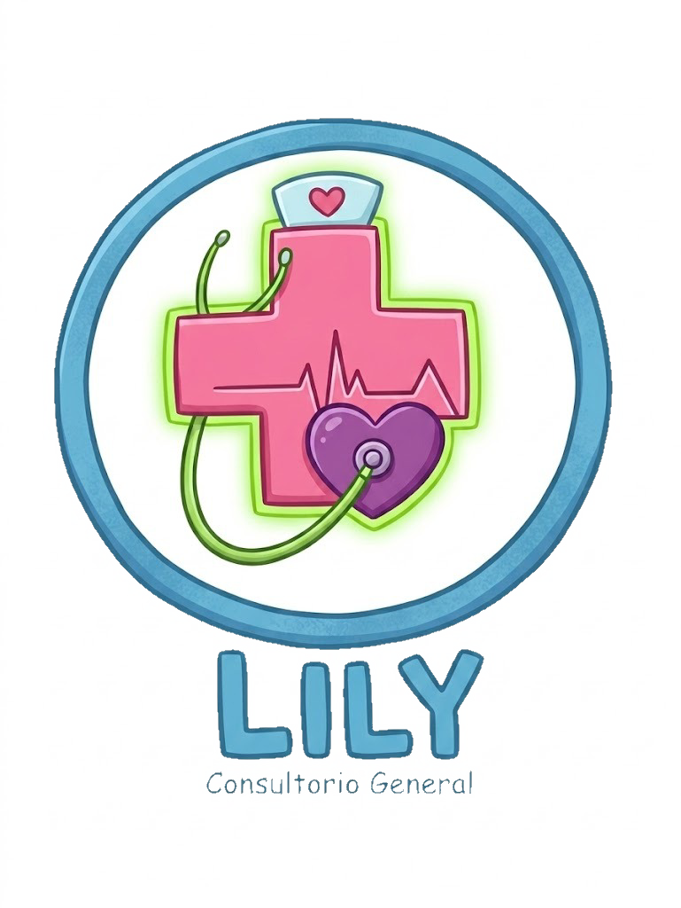

Consultorio Medico Lily
Doctores
| id doctor |
RFC |
Nombre completo |
Cedula profesional |
CURP |
Fecha de nacimiento |
Sexo |
Telefono personal |
Tel del consultorio |
Certificado |
Correo institucional |
Especialidad |
Sub especialidad |
Disponibilidad |
Horario |
| DOC-001 |
TAVI50210P88 |
Armando Casas Rico |
7482910 |
CARA750412HDFRRN09 |
12/04/1975 |
H |
656 1267 9051 |
656 5000 1234 |
CONACER-GER-2026 |
a.casas@clinicamet.mx |
geriatria |
cardiologo geriatrica |
lun-vier |
08:00-14:00 |
| DOC-003 |
ACAT21130MK2 |
Octavio Paz Aranda |
0198673 |
PAA0800115HGRNNN02 |
25/01/1980 |
H |
656 3232 4655 |
656 5000 1234 |
CNP-NEUM-2026 |
o.paz@clinicamet.mx |
neumologia |
alergiologia |
lun-vier |
10:00-18:00 |
| DOC-004 |
IHA1805149L0 |
Rosa Meza Tellez |
6172839 |
METR780630MGTNRS01 |
30/06/1981 |
M |
656 9678 8769 |
656 5000 1234 |
CMG-GASTRO-2024 |
r.meza@clinicamet.mx |
gastroenterologa |
endoscopia |
lun-mier |
09:00-15:00 |
| DOC-005 |
RN01001017S4 |
Luz Marina Guerra |
5564738 |
GUMI850310MDFRRCO5 |
25/08/1990 |
M |
656 9767 5698 |
656 5000 1234 |
COMEGO-GIN-2025 |
l.marina@clinicamet.mx |
ginecologia |
endocrino-ginecologia |
lun-vier |
11:00-19:00 |
| DOC-006 |
TTM050918BY5 |
Jaime Altozano Real |
4433221 |
ALRJ900825HJCMSL03 |
25/08/1990 |
H |
656 4567 9749 |
656 5000 1234 |
CONAPEME-PED-2025 |
j.altozano@clinicamet.mx |
pediatria |
dermatologia pediatria |
lun-vier |
14:00-20:00 |
| DOC-007 |
SDO220303V11 |
Blanca Nieves Solis |
9928374 |
TORM800520MDFNNA01 |
20/05/1980 |
M |
656 9112 2334 |
656 5000 1234 |
CMR-REU- 2026 |
b.solis@clinicamet.mx |
rehabilitacion deportiva |
ninguna |
lun-vier |
11:00-19:00 |
| DOC-008 |
CPU9806124D3 |
Aquiles Brinco Lara |
8837462 |
BRAL920405HGTNS08 |
05/04/1992 |
H |
656 1212 3434 |
656 5000 1234 |
CONAME-PSI-2026 |
a.brinco@clinicamet.mx |
nutricion clinica |
ninguno |
lun-vier |
9:00-15:00 |
| DOC-009 |
FDE031224RE9 |
Mirasol de la Torre |
7726354 |
NISB881012MDFRRL02 |
12/10/1988 |
M |
656 9900 1122 |
656 5000 1234 |
CMU-URO-2023 |
m.delatorre@clinicamet.mx |
urologia |
ninguno |
lun-vier |
12:20-20:00 |
| DOC-010 |
ECL110715JH6 |
Sebastian Valdez G. |
1105942 |
VAGS880415HDFRRN02 |
15/04/1988 |
M |
656 3468 1289 |
656 5000 1234 |
CUM-URO-2022 |
ninguno |
nefrologia |
ninguno |
lun-vier |
9:00-15:00 |